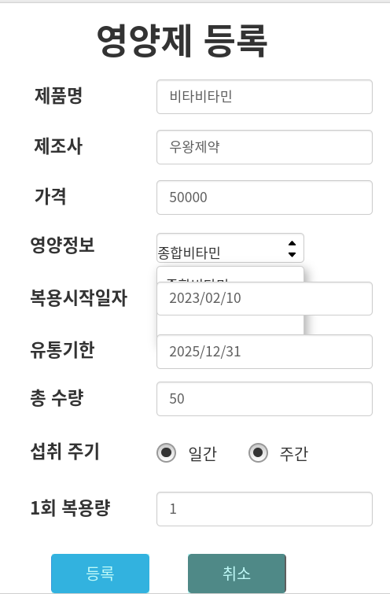

목업 이미지

소개
본인이 복용하는 영양제를 등록하면 섭취해야 하는 시간에 알림을 보내는 API를 구상했습니다. 수량이 얼마 남지 않은 영양제를 알려주는 기능을 넣어 편의성을 높였습니다.
처음 진행했던 팀 프로젝트입니다. '건강'이라는 주제로 팀원들과 의견을 취합하고 담당 파트를 분배하는 과정을 경험할 수 있었습니다.
제작기간 : 2023.02.09 - 02.13
팀원 : 김소윤, 이소우, 최병권, 김성중, 정산
사용 기술
Back-end : Java https://gitlab.com/all_xm/nutricheckmanager